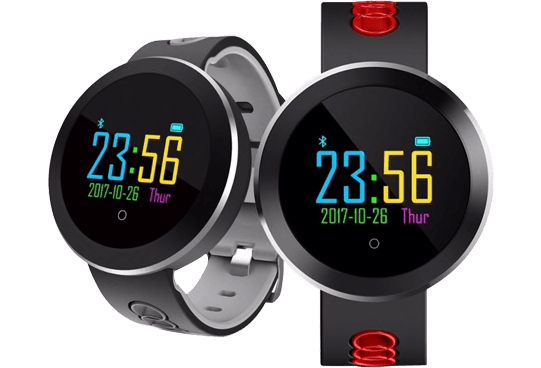

La nouvelle HealthWatch qui permet de surveiller sa santé remplace les montres de sport coûteuses
10 octobre 2019
Si vous n'avez jamais eu de HealthWatch auparavant, c'est LA montre qu'il vous faut !
Il y a quelques semaines, nous avons célébré le lancement d'une nouvelle HealthWatch sur le marché, et elle s'avère moins chère et plus facile à utiliser que les précédentes.
Ce n'est pas une HealthWatch ordinaire, elle est équipée des toutes dernières technologies. Elle permet d'obtenir les mêmes résultats qu'une montre connectée à 400€..
Pourquoi cette HealthWatch permet de sauver des vies ?
Il est aujourd'hui bien connu que les maladies cardiaques et autres problèmes de santé augmentent en raison de notre mode de vie moderne. La raison principale de ces maladies est le manque d'exercice physique régulier effectué par de nombreuses personnes. Selon l'OMS (Organisation mondiale de la santé), une personne souffre déjà d'un manque d'activité physique si elle se déplace moins de 90 minutes par jour. Et vous, faites-vous partie de ces gens qui ne bougent pas assez ?
En plus des effets liés à un mode de vie sédentaire, les maladies cardiaques et autres problèmes médicaux sont également favorisées par une mauvaise alimentation, le stress au travail et les turpitudes de la vie quotidienne.
De plus en plus de gens négligent leur santé et choisissent de ne pas faire d'activité physique ; seul un mode de vie sain assure l'équilibre émotionnel et le bien-être quotidien !
Pour ceux d'entre nous qui ne bougent pas assez et qui n'effectuent pas les examens médicaux de routine utiles , cette montre connectée centrée sur la santé est d'une aide inestimable. Il s'agit d'une smartwatch qui mesure toutes les données vitales: un véritable assistant médical au poignet.
C'est pour cette raison que cette smartwatch est aussi l'une des montres connectées les plus vendues au monde. Tout le monde souhaite faire quelque chose pour sa santé, c'est pourquoi elle se vend comme des petits pains.
De quoi s'agit-il ?
Il s'agit de la nouvelle HealthWatch et elle est maintenant disponible en France.
La HealthWatch a été développée par une équipe d'experts qui souhaitait créer une montre de haute qualité avec des capteurs de données sanitaires et qui pouvait être achetée par tous, mais qui était aussi extrêmement résistante et qui disposait de suffisamment de batterie. Ils voulaient également rendre sa manipulation si facile que même les personnes ayant peu de connaissances techniques puissent s'en servir.
Pour cela, ils ont dû imaginer cette HealthWatch à partir de zéro ; et le résultat de toute cette recherche et développement est assez bluffant.
La HealthWatch en action :
Combien coûte-t-il ?
À cause de la nouvelle technologie et de sa performance étonnante, il devrait coûter environ 400 €, mais ils le mirent sur le marché pour 69 €.
Comment fonctionne-t-elle ? Que peut-elle faire ?
- Elle mesure votre tension artérielle, votre pouls et votre taux d'oxygène dans le sang.
- Affichage OLED Écran
- Mesurez vos mouvements quotidiens. La HealthWatch est la solution parfaite pour tous ceux qui veulent suivre leur activité physique et les calories brûlées quotidiennement.
- Matériau extrêmement durable et résistant. La Healthwatch est étanche (certifié IP67) et extrêmement résistante aux intempéries.
- Répondez au téléphone avec la HealthWatch. Plus besoin de chercher son téléphone dans sa poche ou dans son sac.
- Très longue durée de vie de la batterie, pas besoin de recharger tous les jours. En veille, elle dure jusqu'à 150 jours !
- Surveillez vos phases de sommeil afin de déterminer si vous dormez profondément, si votre sommeil est léger ou si vous êtes toujours sur le qui-vive, près à vous réveiller.
Cette HealthWatch est destinée à tout le monde : que vous soyez jeune, actif ou que vous n'ayez pas le temps de faire de l'exercice physique quotidiennement : la HealthWatch suit toutes les données sanitaires vitales et analyse votre état de santé.
La HealthWatch détermine également la saturation en oxygène de manière totalement indolore à l'aide de capteurs de lumière. La saturation en oxygène est un paramètre important pour évaluer la fonction respiratoire. Dans de nombreux cas, elle permet de tirer des conclusions sur le fonctionnement et l'activité des poumons.
Pourquoi vous devez acheter cette montre ?
Pensez à la facilité avec laquelle vous pourriez prendre un peu plus soin de votre santé. Grâce à elle, vous aurez toujours une idée précise de votre état de santé et vous pourrez mener toutes vos activités en toute tranquillité d'esprit.
Comment puis-je obtenir la HealthWatch ?
Si vous commandez AUJOURD’HUI, vous obtiendrez une REMISE de 50 % sur la HealthWatch.
Veuillez garder à l’esprit qu’à cause de la demande importante, cette offre ne sera peut-être plus valable la prochaine fois que vous visiterez le site.
C’est comme ça que vous pouvez en acheter un :
1) Commandez la HealthWatch sur le site officiel
2) Placez la HealthWatch à votre poignet
3) Désormais, vous êtes informé de votre état de santé en permanence et pouvez agir sur votre santé si nécessaire
C'est aussi simple que ça !